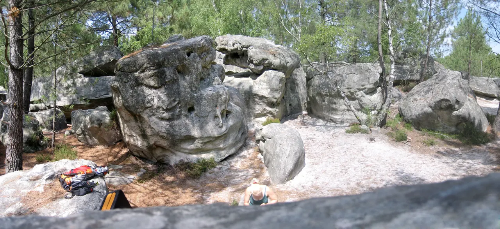
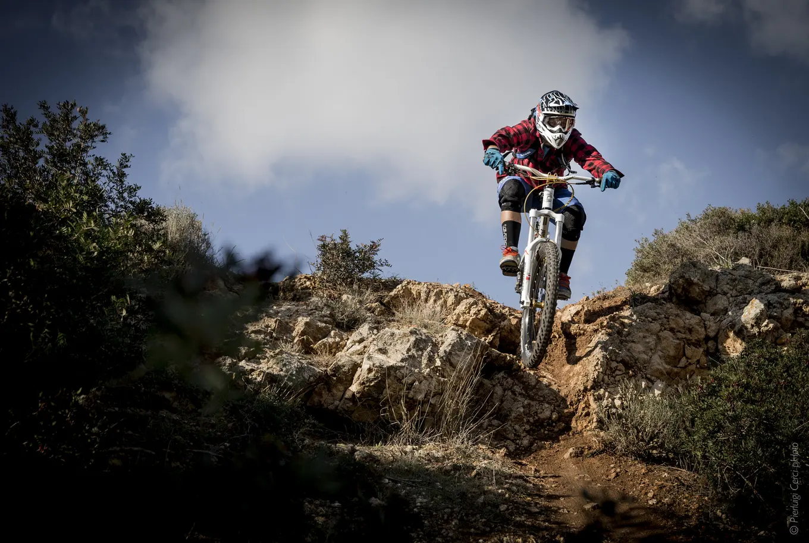
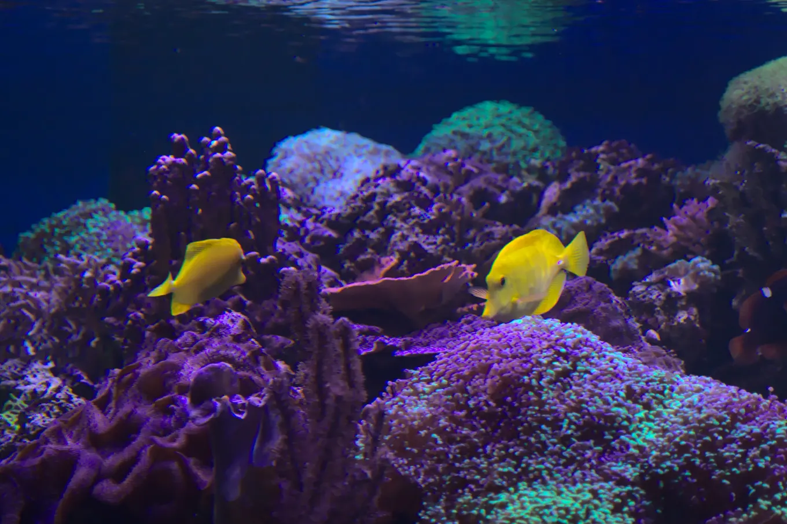
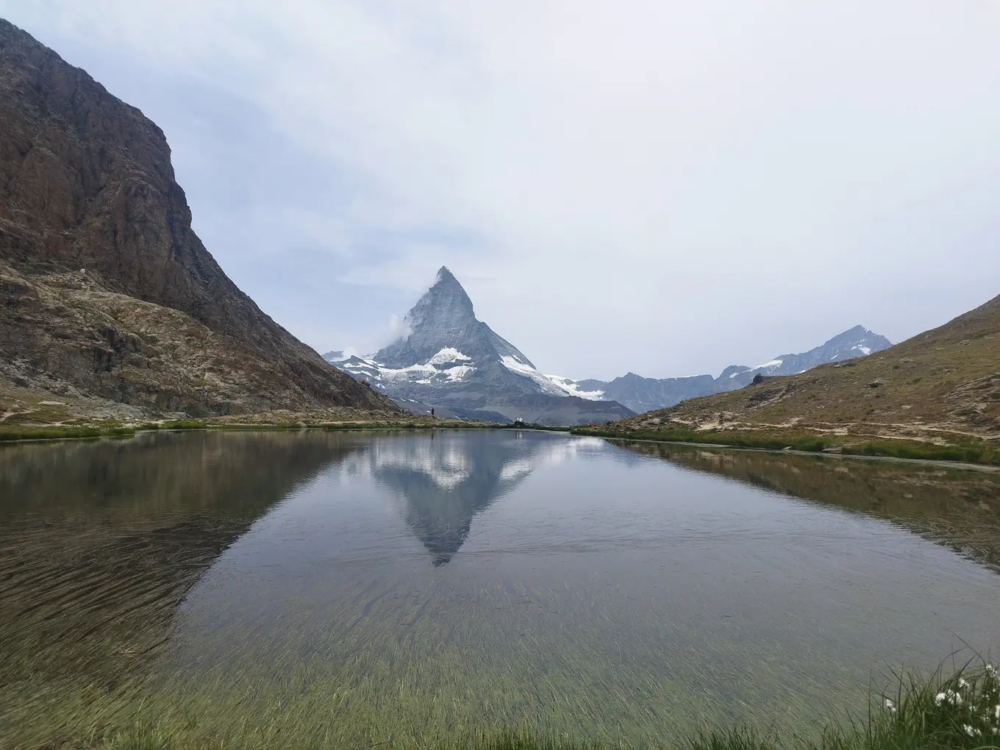
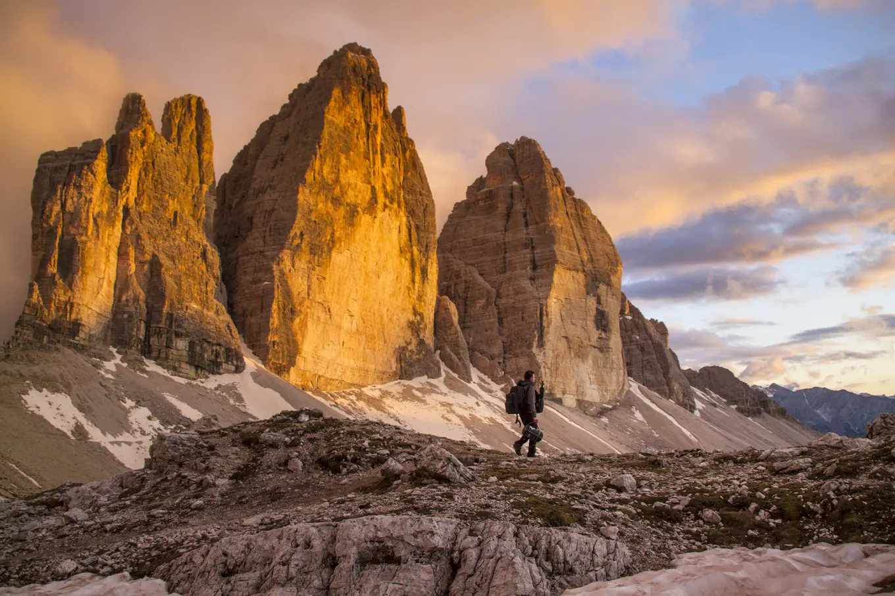
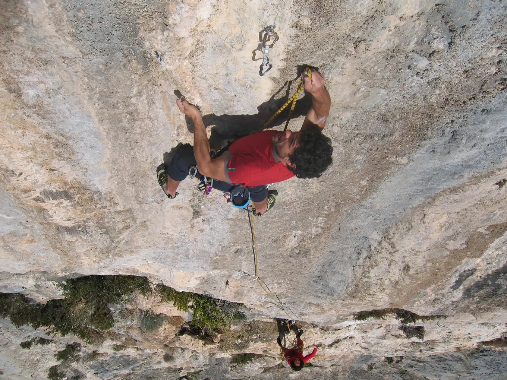
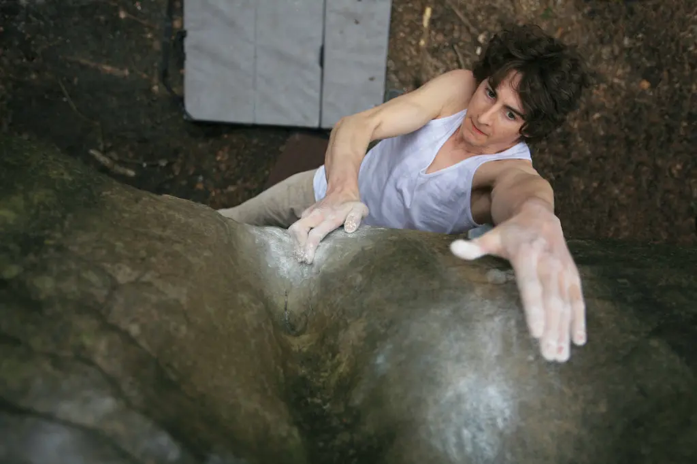

Cabines de La Grave

Photo personnelle · EPS BARLETTA.
Les fonds du carnet sont proposés au format WebP. Les crédits et les licences sont indiqués sous chaque photo.
Photo personnelle · EPS BARLETTA.

Photo personnelle · EPS BARLETTA.

© Clément Proust (Clementp1986, clementp.fr). Photo originale · CC BY-SA 4.0. Cette version est distribuée sous la même licence.

Pimlico27. Photo originale · CC BY-SA 4.0. Cette version est distribuée sous la même licence.

Amada44. Photo originale · Domaine public, libérée par son auteur.

Pierluigi Cerci. Photo originale · CC BY 3.0.

Cole Bryant. Photo originale · CC BY-SA 4.0. Cette version est distribuée sous la même licence.

Haw777. Photo originale · CC0 1.0.

Simone Mainetti. Photo originale · CC BY-SA 4.0. Cette version est distribuée sous la même licence.

Ultimouomo. Photo originale · CC BY-SA 4.0. Cette version est distribuée sous la même licence.

Stéphan Denys. Photo originale · CC BY-SA 2.0. Cette version est distribuée sous la même licence.


.jpeg){kind=link}